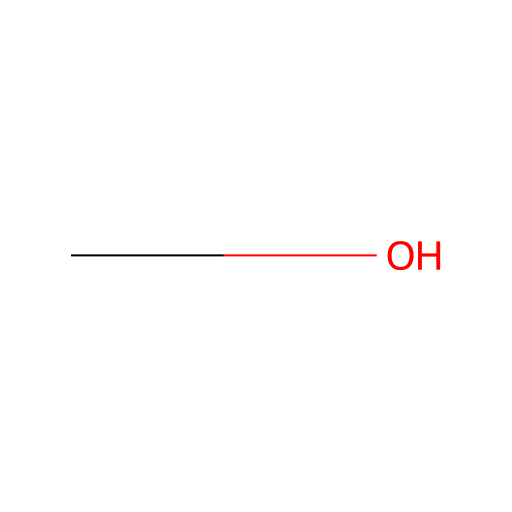
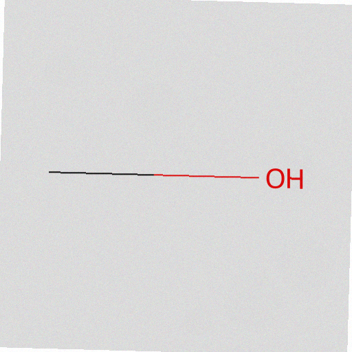
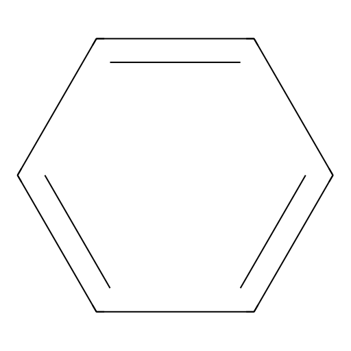
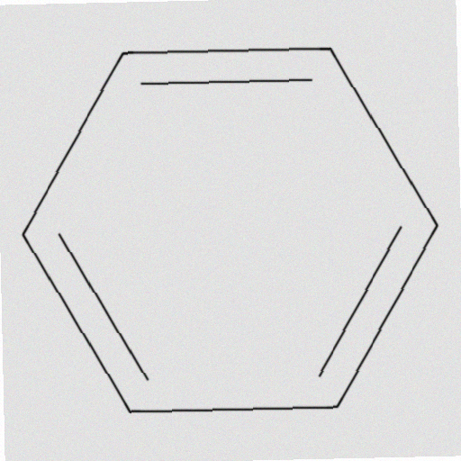
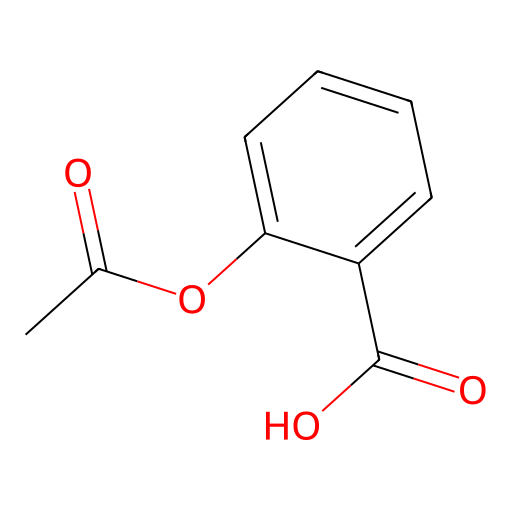
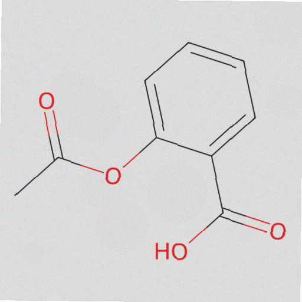
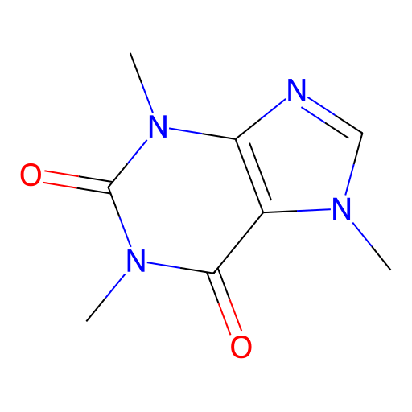
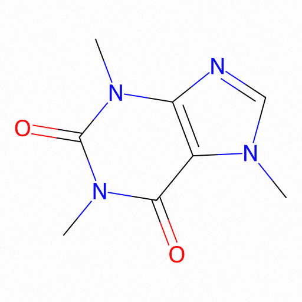

Entrada
Imagen PNG/JPG de estructura molecular 2D — diagramas de papers, bases de datos o generados sintéticamente.
Pipeline de visión multimodal que convierte diagramas 2D de moléculas en notación SMILES, utilizando DeepSeek-OCR (3B) con fine-tuning eficiente mediante LoRA.
En quimioinformática, convertir imágenes de estructuras moleculares a SMILES habilita búsqueda, almacenamiento y análisis computacional de compuestos químicos.
Imagen PNG/JPG de estructura molecular 2D — diagramas de papers, bases de datos o generados sintéticamente.
Cadena SMILES que codifica la topología atómica y enlaces de la molécula: <smiles>...</smiles>
Flujo end-to-end desarrollado en Google Colab con GPU Tesla T4.
Descarga de unsloth/DeepSeek-OCR desde Hugging Face con Unsloth.
Inferencia sin fine-tuning sobre imagen molecular de prueba.
Adaptación con 25 muestras de MolParser-7M en formato conversacional multimodal.
Extracción de SMILES con resolución Gundam (1024/640 px, crop mode).
RDKit genera 36 moléculas en estilos clean y realistic para pruebas adicionales.
Imagen molecular (PNG)
│
▼
DeepEncoder
├── SAM (80M) — percepción local
├── CLIP (300M) — conocimiento semántico
└── Compresor 16× — tokens visuales
│
▼
DeepSeek-OCR (3B) + LoRA adapters
│
▼
<smiles> CC(=O)Oc1ccccc1C(=O)O </smiles>
Fine-tuning eficiente con LoRA sobre subset de MolParser-7M.
Modo recomendado para documentos complejos: vista global 1024 px con tiles locales de 640 px y crop mode activado.
36 moléculas en 11 categorías (alcoholes, aromáticos, fármacos, aminoácidos, heterociclos) generadas con RDKit en variantes clean y realistic.
Muestras representativas del generador sintético: estilo limpio vs. estilo realista.


Alcohol simple. SMILES: CO


Compuesto aromático. SMILES: c1ccccc1


Fármaco. SMILES: CC(=O)Oc1ccccc1C(=O)O


Heterociclo complejo. SMILES: CN1C=NC2=C1C(=O)N(C(=O)N2C)C
Implementación modular refactorizada desde el notebook de Colab.
SMILES-CHEMISTRY-DEEPSEEK-OCR/
├── index.html # Presentación del proyecto
├── src/
│ ├── config.py # Hiperparámetros LoRA y entrenamiento
│ ├── dataset.py # Carga MolParser-7M y formato conversacional
│ ├── inference.py # Inferencia y extracción SMILES
│ └── training.py # LoRA y TrainingArguments
├── notebooks/
│ └── notebook_colab.ipynb # Notebook de Colab
└── docs/
├── pipeline.md
├── metrics.json
└── dataset_catalog.json # Catálogo del dataset sintético